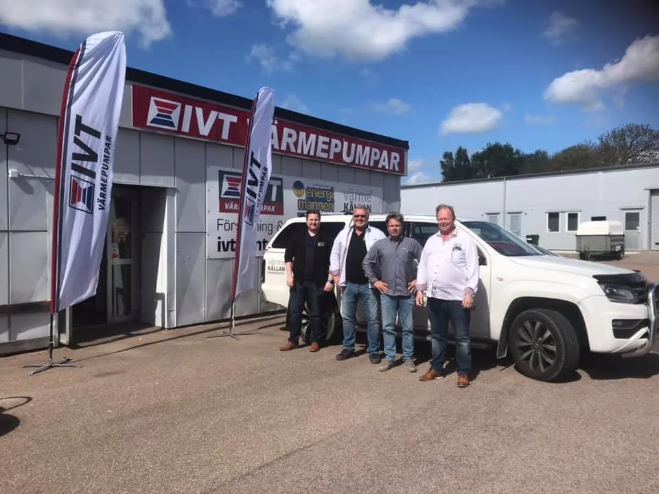

Kennert Bengtsson
Teknisk säljare Halland
kennert@varme-kallan.seMobiltelefon: 076-002 1000Huvudkontor: 010 - 264 60 60Installation, service och personlig rådgivning. Värmekällan hjälper dig att hitta en värmelösning som passar ditt hus i Halmstad med omnejd.
Ryttarevägen 8
302 62 Halmstad
Vardagar 08.00-16.00
Lunchstängt 11.30-12.30
Helger stängt
Jour vid akuta driftstopp: 070-852 05 26

Vi hjälper dig från första kontakt till installation och service.
Teknisk säljare Halland
kennert@varme-kallan.seMobiltelefon: 076-002 1000Huvudkontor: 010 - 264 60 60Kundkontakt/Bokning
linda.bengtsson@varme-kallan.seMobiltelefon: 0734-297538Halmstad: 035-12 58 60Falkenberg: 0346-61022När man installerar en värmepump i Halmstad utvinns energi från luft, mark eller vatten. En värmepump använder väldigt lite elektricitet för att utvinna energi och överför den därefter till ditt värmesystem. Detta gör värmepump till ett miljövänligt och mycket effektivt alternativ för att värma upp din bostad med eftersom den minskar energiförbrukningen för de allra flesta efter installation. På så vis sparar du på både miljön och dina kostnader.
Bergvärmen är det bästa alternativet när man ser till energibesparing. Bergvärmen har högts temperatur av dem alla under de kallaste månaderna då husen och fastigheterna kräver som mest energi.
När man har för långt till berg eller man har en för liten tomt för att gräva ner jordvärme är en luft/vattenvärmepump det självklara valet.
Luft/luftvärmepumpar lämpar sig väl för dagens smarta hem. Dess luftreningsfunktioner, AC och att de är lätta att styra via SMS eller WiFi gör den till en värmepump som passar de flesta hem.
Frånluftsvärmepumpar är ofta installerade i tvättstugor, groventréer eller badrum där utrymmet är begränsat. Just därför är frånluftsvärmepumpen också mycket kompakt.
Välkommen till Värmekällan Väst AB / IVT-Center Väst i Halmstad! Vi installerar och servar värmepumpar från IVT i Halmstad, Falkenberg, Båstad, Laholm, Hyltebruk - ja hela Halland! Vi är återförsäljare av IVT och kan deras produkter utan och innan.
Tveka inte att kontakta oss om du har frågor om IVTs sortiment av värmepumpar eller du vill ha en offert på installation eller service.
Regelbunden service av en auktoriserad servicepartner är starkt rekommenderat för att din värmepump ska hålla så länge som möjligt. Vi på Värmekällan Väst AB/IVT Center i Halmstad har certifierade servicereparatörer som servar värmepumpar. Detta både för att temperaturen i ditt hem ska fortsätta vara så behaglig som möjligt, samt för att du ska hålla nere kostnaderna så mycket som möjligt.
På fackspråk kallas även dessa värmepumpar för vätska/vatten värmepumpar eftersom man hämtar energin från berget under, jorden eller en sjö via en kollektorslang. I kollektorslangen finns en vätska vilket idag oftast är en bioetanol och vattenblandning, men det kan också vara en glykolblandning. Efter att värmepumpen hämtat upp energin från berget, jorden eller sjön så omvandlas den till värme som levereras ut på det vattenburna värmesystemet och till varmvattnet. Därav namnet vätska/vatten. Man använder alltså samma typ av värmepump för att hämta energin ur dessa olika energikällor, vissa mindre inställningsändringar kan behöva göras beroende på vilken energikälla man har.
En luftvatten värmepump hämtar energin som finns i uteluften. Den omvandlar den energin till att ge fastigheten värme och varmvatten. Vanligtvis installeras en luft/vattenvärmepump tillsammans med en kompatibel inne del från samma tillverkare som innehåller varmvattenberedare, eltillskott och styrenhet. Men det går även att på bra sätt komplettera tex en befintlig vedanläggning med en luft/vattenvärmepump.
Frånluftsvärmepumpen har två stycken huvudsyften. Den ska ventilera bostaden eller fastigheten och den ska sköta uppvärmning av värme och varmvatten. Det är värmen i frånluften som återvinns och görs om till ny värme. Frånluft är gammal dålig luft i bostaden som är uppvärmd men ska vädras bort. Samtidigt som den gamla dåliga luften ventileras bort så sugs det in ny frisk luft utifrån till huset via spaltventiler i fönstren eller väggventiler i väggarna.
En Luft/luftvärmepump hämtar energin i uteluften och omvandlar den till värmeenergi som överförs till luften inomhus. Man räknar att en luft/luftvärmepump är ett komplement till den befintliga uppvärmningen i huset.
Det innebär att huset måste tex ha kvar sina elradiator fast man installerat en luft/luftvärmepump. Trots att luft/luftvärmepumpen är mycket bra och effektiv så kanske inte den orkar hålla värmen själv under årets kalla period, därför måste någon annan form av värmekälla finnas med.
Vill du ha alternativ för effektiv uppvärmning av större fastighet eller bostadsrättsförening? Vi på Värmekällan Väst AB har lång erfarenhet av arbete mot både villaägare och fastighetsägare. Läs gärna mer om hur vi arbetar mot fastighetsägare eller kontakta oss för att boka in ett kostnadsfritt hembesök.
Fördelarna med att installera en värmepump i Halmstad är många, och på IVT Värmepumpar erbjuder vi både produkter med hög kvalitet och den kunskap som krävs för att du ska kunna ta del av dessa på bästa sätt. De största anledningarna till att vi på IVT får många förfrågningar om att installera en värmepump i Halmstad är att de är kostnadseffektiva och miljövänliga. Många väljer att kontakta oss för att hjälpa dem byta sitt värmesystem till värmepump då det drar ner på kostnaderna. Trots att det kostar att installera en ny värmepump sparar man betydligt mycket på sikt. Efter att din värmepump i Halmstad är installerad så värmer du din bostad på ett miljövänligt sätt. Energin som används hämtas ur lagrad solvärme vilket gör det till förnyelsebar energi. Genom att byta ut ditt befintliga värmesystem till en värmepump i Halmstad bidrar du till att spara på både natur och miljö, men även dina kostnader.
En av de främsta anledningarna till att många byter värmesystem är att dra ner sina kostnader. Även om det kostar att köpa och installera en ny värmepump, sparar du på sikt in detta med en betydligt lägre energiförbrukning. Hur mycket energi du sparar beror även vilken typ av luftvärmepump du installerar.
Efter en installation av en värmepump så får du din värme på ett mer miljövänligt sätt. Energin hämtas ur lagrad solvärme vilket gör det till förnyelsebar energi. Genom att byta ut ditt befintliga värmesystem kan du därmed bidra till att göra en bra sak för natur och miljö samtidigt som du sänker dina kostnader på ett effektivt sätt.
En värmepump ger värme till din bostad genom att använda sig av använder naturligt lagrad solenergi från berg, jord, luft eller vatten. Med hjälp av gratis solenergi förvandlas värmepumpen till ett utmärkt system för att värma upp din bostad. Värmepumpar kan även värma upp ditt vatten till en mycket låg kostnad. Med hjälp av termodynamikens naturlagar omvandlar värmepumpens kompressor energin ifrån dessa källor till värme och varmvatten.
En mer teknisk förklaring på hur värmepumpar fungerar är att den kokar/förångar ett köldmedium med hjälp av värmeenergin från energikällan. Gasen som skapats av köldmediet kyler man sedan av mot uppvärmningssystemet, vilket gör att gasen övergår till vätska igen. Gasen kondenseras. Den stora energiutvinningen sker när köldmediet övergår från vätska till gas eller från gas till vätska. För att köldmediet ska kunna koka/förångas och sedan kondensera igen måste trycket förändras. Det är kompressorn i köldmediesystemet som får trycket att öka varpå expansionsventilen sänker trycket.
För att värmepumpen ska bli så effektiv som möjligt vill den ha så hög temperatur det går från energikällan samtidigt som den ska producera en så låg temperatur som möjligt för uppvärmning.
Att installera en värmepump kan hjälpa dig sänka uppvärmningskostnaderna med 60-80%, jämfört med om tidigare uppvärmning har varit med hjälp av el eller olja. Har man en gammal värmepump som behöver bytas ut till en ny lika kraftfull modell så brukar vi räkna med att man gör en liten ökad energibesparing med nya generationens värmepumpar.
I en del fall vid byten av värmepumpar så dimensionerar man om värmepumpen, och byter i vissa fall även ut den mot en större modell, vilket hjälper en att göra en betydligt större besparing i jämförelse med tidigare, men kan också behöva komplettera sin energikälla. Finns ett värmesystem för bergvärme installerat behöver det ibland kompletteras med ytterligare ett borrhål för att klara få upp tillräckligt med energi för den större och kraftigare värmepumpen.
När man dimensionerar storleken/effekten på en värmepump är det viktigt att man räknar på förbrukningen från tidigare värmekälla, om värmen exempelvis kom från en oljepanna, elpanna eller från direktverkande el.
På så sätt får man en bra förståelse för hur mycket energi fastigheten kräver och hur installationen av värmepumpen bör utföras. Det är även fördelaktigt att ta hänsyn till fastighetens storlek och den totala ytan som behöver värmas upp.
Vid speciella fall då man inte har någon tidigare förbrukning att gå efter behöver man istället räkna på hur mycket effekt som krävs per kvadratmeter. Vid dessa fall behöver man ta hänsyn till fastighetens ålder, vilken typ av isolering och fönster fastigheten har i dagsläget, samt hur många våningsplan huset har.
Man behöver också se till vart i Sverige fastigheten är belägen, då man i beräkningarna tar med att vi har en kallare väderlek i norra Sverige än i de södra delarna, vilket därmed kräver en högre förbrukning och eventuellt en något starkare värmepump. Varmvattnet dimensioneras efter hur många personer som finns i hushållet och behöver ta del av det.
Olika sorters värmepumpar fungerar på olika sätt och genom att jämföra dess funktioner kan du hitta det alternativ som passar dig och din bostad bäst. Många gånger handlar valet av värmepump om din bostad har ett vattenburet uppvärmningssystem eller inte. Hos oss finner du många produkter av hög kvalitet att välja bland till ditt hem i Halmstad, Halland. Det är viktigt att hitta rätt bland alla produkter, genom kontakt med oss får du bästa möjliga hjälp.
Luft-luftvärmepumpar hämtar luft utifrån, gör om energin och sprider den till luften inne i ditt hus. De är oftast både mindre och enklare än andra värmepumpar. Eftersom de även kostar mindre är de många gånger ett bra alternativ om man vill värma upp mindre ytor eller utrymmen som garage och uterum. Luft-luftvärmepumpar kan användas till att både värma upp eller kyla ner och kräver enklare installation.
En luft-vatten-värmepump hämtar energin utifrån och leder den till ditt hus vattenburna värmesystem. Dessa värmepumpar genererar mycket värme i jämförelse med vad det kostar och hjälper samtidigt till med att värma upp vatten till det befintliga vattenburna värmesystemet.
Frånluftsvärmepumpar fångar upp värmen innan den ventileras ut ur din bostad och överför denna till det vattenburna uppvärmningssystemet i huset. På detta sätt får du in ny fräsch luft i huset samtidigt som du återanvänder värmen. Luftvärmepumpen installeras vanligtvis redan vid byggnationen av huset.
Genom att installera en bergvärmepump till din bostad utvinner du energi från berggrunden. Även om installation av bergvärme är betydligt dyrare än andra typer av luftvärmepumpar, sparar du betydligt mer i längden. En bergvärmepump kräver i stort sätt heller inget underhåll.
Oavsett vilken typ av värmepump som passar dig bäst kan du med dagens modeller komma undan med stora besparingar på sikt. Hur stor kostnaden blir för installation eller service har också att göra med vilken typ av värmepump du väljer till ditt hem i Halmstad, Halland.
Är du osäker på typ eller modell är du välkommen att komma in eller kontakta oss. Vi på Värmekällan Väst AB / IVT Center har lång erfarenhet och bred kunskap när det kommer till allt från produkter och installation till service och underhåll. Vi erbjuder tjänster så som installation och service av din värmepump i Halmstad, Halland. Kontakta oss så hjälper vi dig med allt som har med värmepumpar att göra, oavsett om det är service eller installation.